My profile
所属 大阪公立大学工業高等専門学校3年知能情報コース
部活 大阪公立大学工業高等専門学校汽車クラブ
誕生日 2006年9月11日
The work
JavaScript紹介
自由課題作品 10作りゲーム
高専祭ゲーム展示作品 チキンレース
メインプログラミング アイデア担当
おみくじアプリ 製作期間2023年12月～2024年1月
Githubリンクこのアプリはおみくじアプリです
使い方はまず名前の入力欄に名前を入力して、
おみくじを引くボタンをクリックします。
するとメッセージ欄に先ほど入力された名前とともにおみくじの結果が表示されます。
また、右上に先ほどのおみくじの結果に合わせたイラストが表示されます。
もう一度占った際にはその時の結果が表示されます
そして大吉や大凶を引くとスペシャルメッセージが表示されるボタンが出現します。
そのボタンをクリックするとメッセージ欄にスペシャルメッセージが表示されます
今回はtkinterを活用したが、tkinterの型とパイソンのプログラム、
表示のされ方を調整するのが大変だった。
.png) 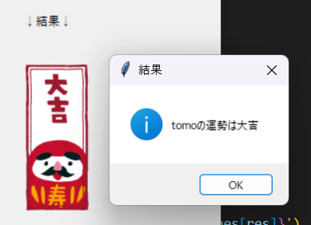
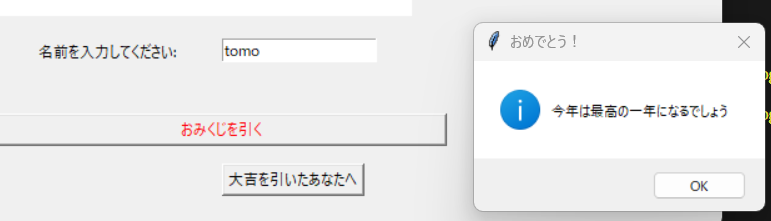
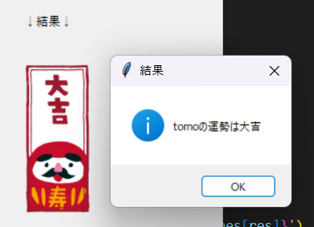
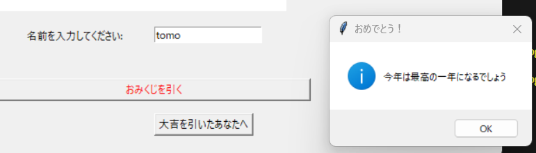
todoリストアプリ 製作期間2月15日～22日 製作時間 約10時間
Githubリンクこのアプリはtod管理アプリです。
使い方は、入力欄にやることの内容を入力し、横のカレンダーで締切日を設定します。
すると、やること、締切日、締め切り日までの日数がtodoリストに表示されます。
また、締切日が近い順に自動的に並べ替えられます。
やることが終わって削除する場合はカーソルでクリックし
完了ボタンを押すことで削除することができます。
上のおすすめやることボタンを押すとランダムでやることリストの中から
一つ選択しおすすめしてくれます。
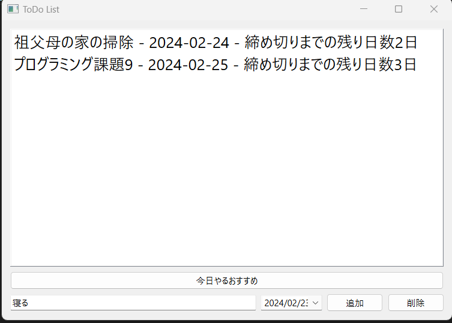 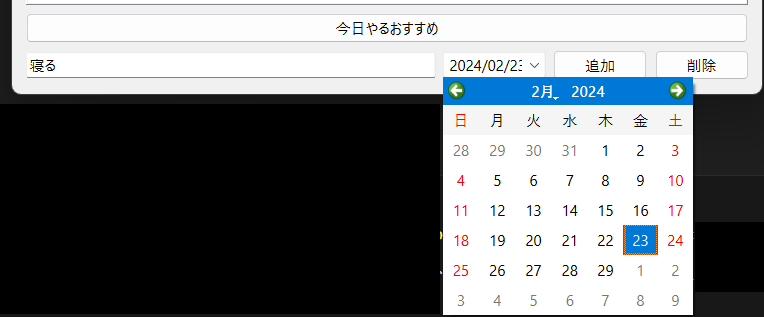 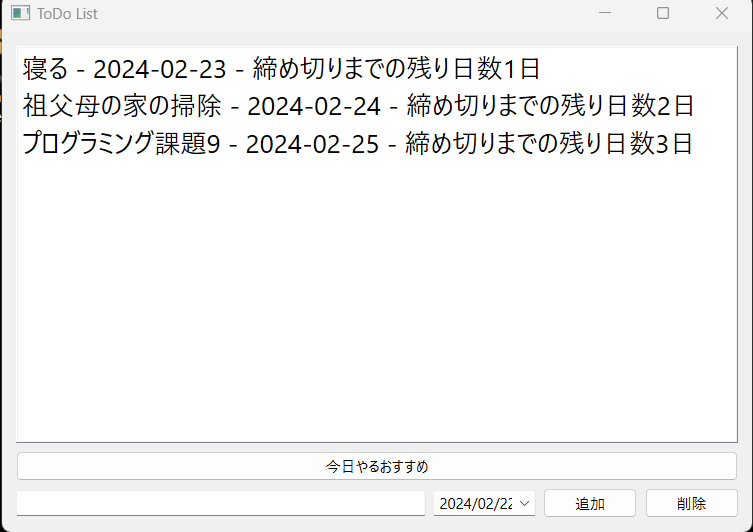 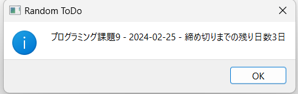総合WEBアプリ 製作期間10月07日～2月日 製作時間 約10時間
GithubリンクこのアプリはWEBアプリ(現在TODOアプリ、ブログアプリ)をまとめたアプリです
ログイン機能の実装により双方のデータ管理が可能に！
現状はTODOアプリでやることを監理し、終わったらブログ等で呟ける総合アプリとなっています
今後の展望として、ミニゲーム等も別枠で追加していけたらと思います。
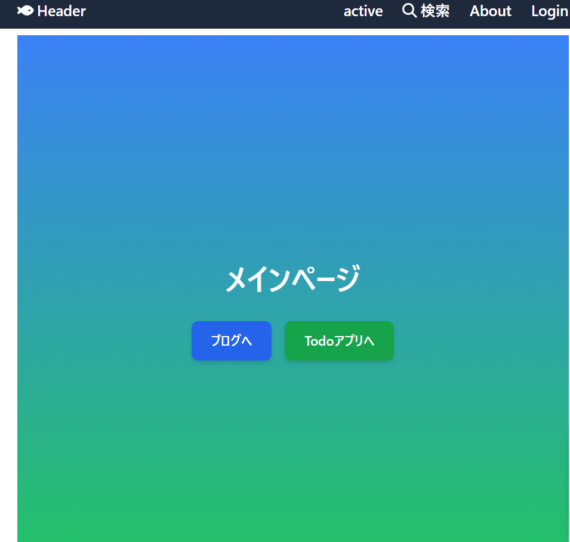 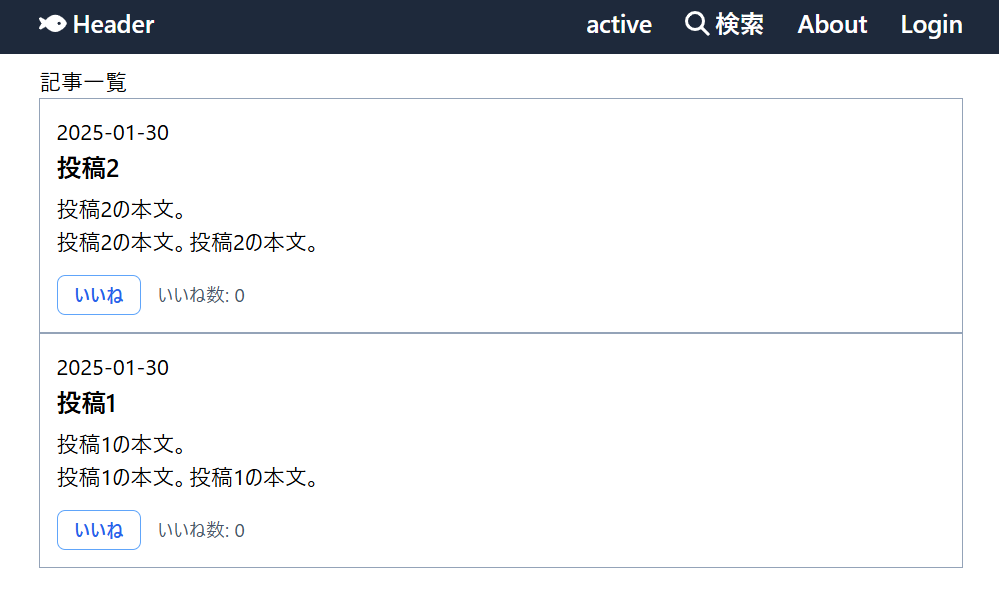 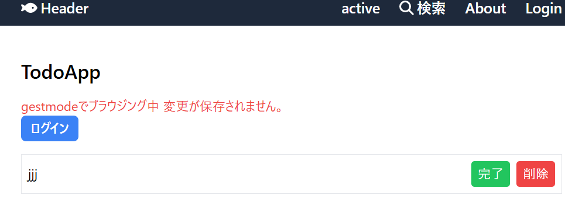Skill
プログラミング言語
・Python言語
・Arduino言語
・Scratch
・C#
ソフトウェア
・Git/GitHub
・VSCode (venvによるPython開発)
・ArduinoIDE
・Deeds-DCS
・MakeCode for micro:bit
・Tinkercad
・WSL (Windows Subsystem for Linux)
・Ambient
・Unity